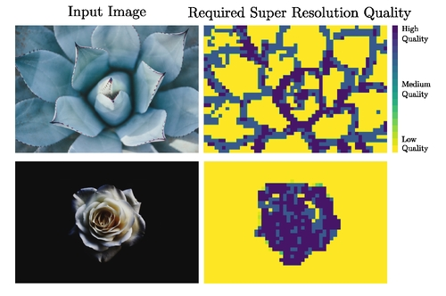

|
Volodymyr Karpenko I'm a PhD student at USI in Lugano, Switzerland, where I am advised by Antonietta Mira and Andrea Raballo. My research is about NLP applied to Mental Health. I am also interested in computer vision, computer graphics, deep learning, and generative AI. |

|
Research |
|  |
Super Resolution for Humans
Volodymyr Karpenko, Taimoor Tariq, Jorge Condor, Piotr Didyk SIGGRAPH Poster, 2025 supplement / bibtex / poster |